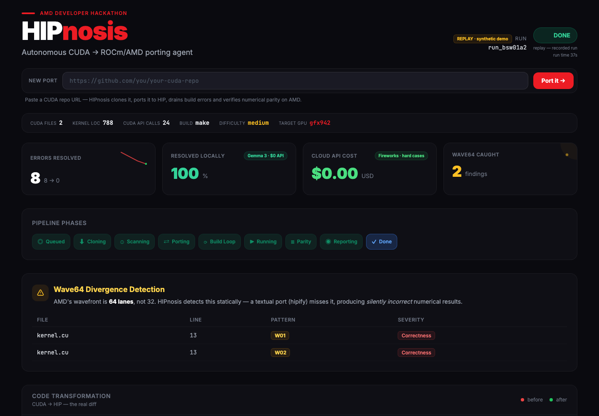

HIPnosis is an autonomous agent. Give it a CUDA repository; it compiles on a real MI300X, drains every build error, catches the wavefront-64 bugs a textual port ships silently, and hands back a verified port with a proof you can check yourself.

NVIDIA warps are 32 lanes. AMD wavefronts are 64. Translate this line and it compiles cleanly on an MI300X — then returns corrupted numbers, with no error and no crash. HIPnosis is built to catch exactly this class of divergence, statically, before it ships.
A translator hands you HIP source and calls it done. HIPnosis treats translation as a single phase, then compiles, patches, runs and verifies on real hardware until the numbers match.
The demo replays a recorded run of bsw-cuda (Smith-Waterman) end to end. No install, no sign-up — everything below runs in your browser.
Eight compiler errors fall to zero across four iterations — each fix classified, applied as a git commit, and measured by the build.
Open the live run →Two wavefront-64 divergences flagged as correctness — the exact bugs a textual port compiles clean and ships broken.
Inspect wave64 →The Port Passport recomputes sha256(diff) in your browser. Tamper with one byte and the seal flips to TAMPERED.
Check the passport →Alongside the human-readable certificate, each run emits a hash-signed attestation — the diff, the verdict, the environment, the source and final commits. It follows the SLSA provenance model, and anyone can verify it with sha256sum. No trust required, no vendor lock-in on the proof itself.
Radical honesty is the point. The demo replays a recorded run, and the badge always says which mode you're in — synthetic, mock, or live silicon. We never show a scripted terminal claiming a GPU result that didn't happen.
See it run →